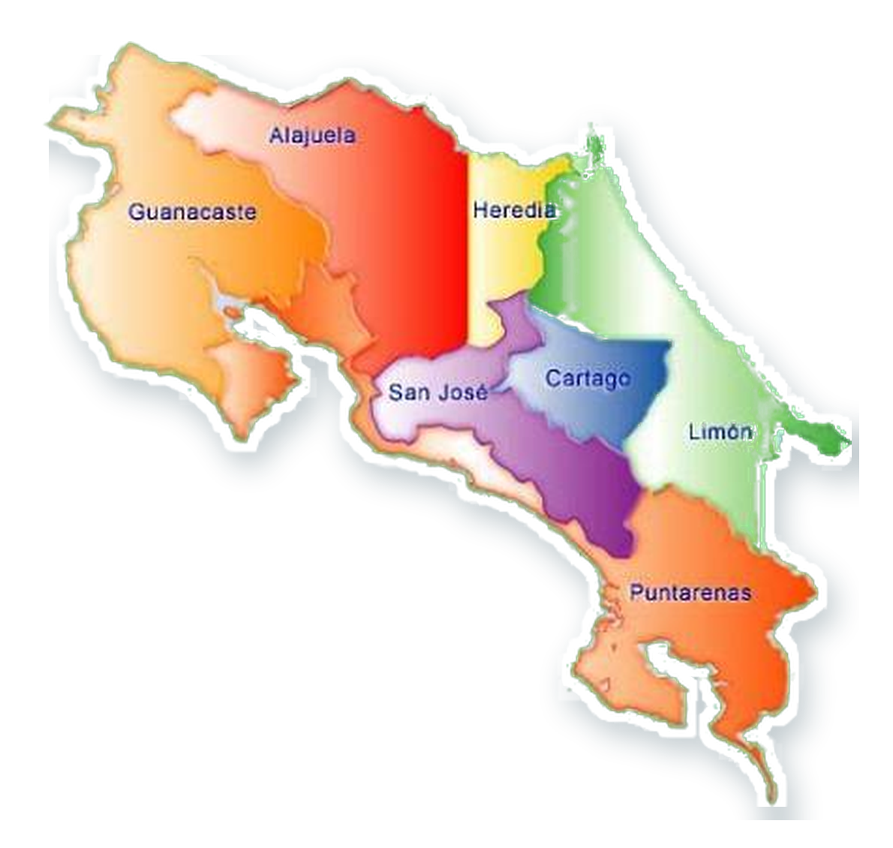

Prototipo v0.3
Feria Científica EXPOTEC 2026
Explora, aprende y conquista las 7 provincias de Costa Rica
Recorre el país de forma divertida e interactiva. Descubre datos, utiliza realidad aumentada, supera desafíos y acumula puntos.
La experiencia WebAR solicitará permiso para usar la cámara únicamente cuando decidas abrirla.
Cada participante inicia una partida nueva. El juego siempre solicitará el nombre al abrirse.
Ruta nacional
Mapa de Costa Rica
Limón está disponible. Las otras provincias se incorporarán progresivamente.
Progreso nacional
0 de 7
Costa Rica
7 provincias · 1 gran aventura

Disponible
🔒 Próximamente
Desafío de Limón
Actividad 1
0 puntos
Provincia completada
¡Misión Limón finalizada!
0
de 60 puntos
0
respuestas correctas
Nueva insignia
Explorador del Caribe
El certificado PDF se habilitará cuando estén disponibles y completadas las siete provincias.